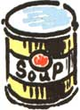
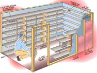
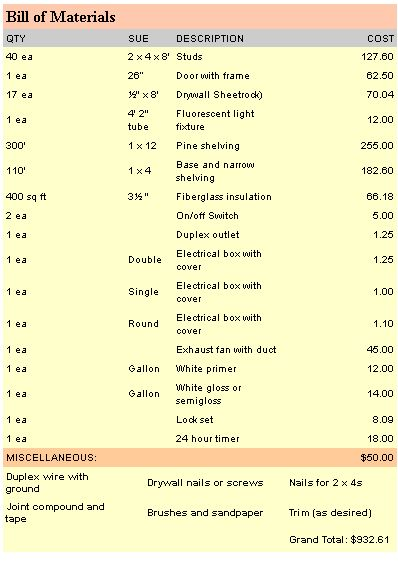

Garden & Yard
A little extra preparation will protect your family during emergency stuations.
A well-stocked pantry is something I wouldn't want to be without. The customary quick trip to "pick up a few things" becomes impractical when the nearest full-service grocery store requires a 72-mile round-trip over unpaved and winding roads and adds $5.30 in gas money to the cost of groceries. But even if we lived right next to Foodland, last summer's many hurricanes and last winter's Blizzard of the Century provided powerful reminders of just how fragile our food supply can be.
A properly designed and stocked pantry is not as big an undertaking as it might seem. If you do some gardening and put up any of your produce by canning or drying, you already have a good start. Although the price may seem somewhat costly at a little over $900, you can cut costs up to one-third by either fitting an existing closet with shelving or by building a pantry into a corner of your basement (you'll have to build only two walls instead of four). Note: Building your pantry into a corner without insulation should be done only with basements that are submerged in soil; the soil will insulate your pantry, keeping stored food cool. Building a pantry in an above-ground basement requires extra insulation, adding to the cost.
Last, remember that this is one project you don't want to skimp on. After all, a solid, well-stocked pantry is insurance that your family will have food and drink throughout any emergency.
Building the Pantry
The size of your pantry will depend pretty much on your reasons for building it. When we took stock of our own reasons, we decided that we wanted a place to store our annual supply of home-canned vegetables and fruit, and we wanted to be able to save money by buying food in bulk. Our survival instincts also told us we would be wise to have sufficient supplies on hand to feed the two of us for six months in an emergency (such as an illness or injury that keeps us from going out or a natural disaster that closes the highway interstate so stores don't get restocked).
We haven't yet experienced an emergency lasting six days, let alone six months, but that hasn't stopped us from digging into our supplies on occasion. We generally shop every six to eight weeks, but we sometimes skip a trip in winter when roads are icy or in summer when farm chores and marathon canning sessions don't give us time for a serious shopping trip.
To hold everything we wanted to put into it, our pantry had to be 15' long and 4 1/2' wide. We used 11 1/2"-deep shelving along three walls. On one of the short walls, we put up 4 1/2" shelving to hold flavorings, spices, and seeds for sprouting. We were left with a 31" aisle. Now, we're sorry we didn't make the aisle six inches wider. As it is, space is a little tight and I'm always afraid I'll knock a jar off a shelf trying to turn around with my arms full.
We put the pantry in the northwest corner of our basement, which has a concrete floor and therefore stays dry. We would have preferred the cooler northeast corner, but that space was already claimed by our water system. Relocating the pressure tank, pump, and water heater would have made the project prohibitively expensive.
Although the existing basement provided two walls, we framed all four pantry walls with 2 x 4s, added insulation all around-including in the ceiling-and sealed the walls with a moisture barrier. We covered the inside walls with 1/2" drywall, taped and painted them with primer, then applied two coats of semigloss paint.
For shelving, we used 1' x 12" pine. The second shelf is 14 1/2" above the first shelf, which rests on a 3 1/2"-high baseboard-perfect for holding gallon and half-gallon jars. The next three shelves are 9 3/4" apart (good for quart canning jars) and the upper shelves are 6 3/4" apart (for pint jars and standard cans).
To keep the shelves from sagging under the weight of our heavy canned goods, we made them no more than 52" long between uprights, and then added PVC pipe supports every 26". In one area we left out the baseboard to provide room for bulk items such as buckets of sugar or flour and jerricans of water.
For easy cleaning, we made all of the shelves removable and painted them with primer and two coats of oil-based paint, sanding lightly between each coat. If we were building the pantry today, we would use vinyl-coated wire shelves, now available at building-supply stores for the same cost as lumber.
To ensure an even, year-round temperature, our pantry has no windows. It does have a bathroom-type exhaust fan, though, to circulate the air and help keep things cool during the summer. A timer switches the fan on at 2:00 A.m. and off again at 6:00 A.M. to bring in cool air during the summer. (It doesn't run in the winter because the canned goods would freeze.) A light fixture and an entry door in one corner complete the setup.
Stocking the Pantry
When we were ready to stock our pantry, we made a list of all the things we thought we should store. Instead of running up a huge grocery bill by buying everything at once, we picked up a few items each time we shopped. It took us about two years to get the pantry fully stocked and another year to fine-tune our inventory. Initially, we had too many of some things and too few of others, and in our zeal we had stocked up on some stuff we really didn't care for. Remember, if you have to weather an emergency, your stress level will be much lower if you at least like what you're eating.
STOCKING UP
Instead of running up a huge grocery bill by buying everything for your pantry at once, pick up a few items each time you shop.
As it turns out, over the years we've adjusted our pantry inventory so it reflects our normal eating patterns. For example, we eat tuna once a week and sardines once a week, so our six-month supply includes 24 cans of tuna and 24 cans of sardines. An important benefit of having your pantry inventory closely reflect your normal eating habits is that everything gets periodically rotated. Using and replacing food on a regular basis ensures that nothing gets so old as to lose its palatability or nutritional value and that cans and jar lids don't sit around long enough to rust through.
The produce that we can and dry ourselves is put up in any quantity we can get our hands on, up to about two year's worth. The first year's supply carries us through to the next harvest season. The second year's supply is our hedge against a bad harvest year. (We seem to have a lot of these lately, thanks to drought and unseasonal frost. Happily, though, the same kind of fruits and vegetables are rarely involved three years in a row).
Things we consider to be pantry staples are: beans (dried and canned), rice, cereal, flour, cornmeal, crackers, sugar (including molasses and honey), jam, pickles, pasta, tomato paste, soups (a big variety), flavorings and spices (to keep things from getting monotonous), canned fruit and vegetables (homegrown and storebought), meats (canned fish, homecanned chicken, etc.), dried vegetables (home-dried or purchased from a camping supply store), nuts and dried fruit, oil, and vinegar. For drinks we have tomato juice, fruit juices, milk (canned and powdered), coffee, tea, and potable water in sealed jerricans (changed frequently to keep it fresh). For our mouser we keep a supply of low-ash cat food. Because we never know what an emergency might bring, one shelf is dedicated to basic medical supplies-bandages, Band-Aids, Neosporin, hydrogen peroxide, and analgesics. To make sure all the bases are covered, we include a variety of vitamins.
A few tips we've learned over the years are: Include some foods that don't have to be cooked and/or keep a camp stove handy in case the electricity goes out for an extended period (who wants to stoke the wood stove in the middle of summer?); make a point of including lots of variety-it doesn't take long to get tired of tuna casserole with noodles; pack dry foods (beans, pasta, rice, etc.) in gallon and half-gallon jars to keep out bugs and moisture; seal boxes and bags (crackers, cereal, flour, etc.) in strong plastic bags or empty them, too, into jars with tight-fitting lids; keep bulk items like flour and sugar from getting lumpy by storing them in food-grade plastic buckets with tight-fitting lids.
Whenever you use something from your pantry, write it down on your shopping list so you won't forget to replace it. Keep a record of home-canned foods that need to be replaced next harvest season. As your cache of food and supplies grows, you'll rest easier knowing that, come what may-natural disaster, riot, or strike-your well-stocked pantry will see you and your family through. As a side benefit, you'll always be prepared for unexpected company.
EAT UP
Using and replacing food on a regular basis ensures that nothing gets so old that it loses its palatability or nutritional value and that cans and jars don't sit around long enough to rust through.
|
 SCOTT MACNEIL |
 |
 |